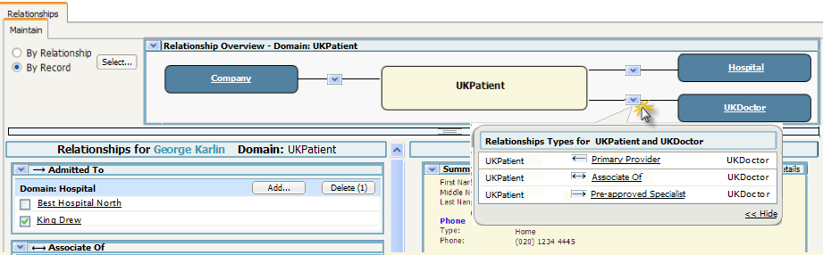
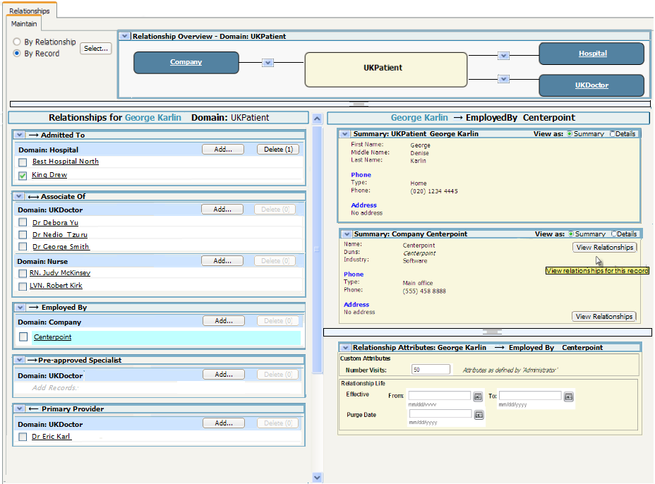

Manage->Relationship-Maintain by Record - Table Look
and Feel
Screens
Initial Screen after Selection of a Record
Overlay shown
by selecting the 'show relationship type' button

Screen after Centerpoint was selected

Notes on usage
-
Make Current allows the user to select the record as the current
record.
Another way to implement this would be to have the Make
current button on each line of the table. The only advantage
to this second approach is that the user does not have to wait for the
right hand side of the screen to load..
This page last
changed on 07-Oct-2008
15:33:00 PDT by andreakendall@dev.java.net